Portfolio
This page showcases selected work and data projects to visually complement my CV.
Data and Visualizations
Tableau: Startup Ecosystem Investment Explorer
This dashboard visualizes global funding statistics of startup ecosystems.
Shows investment trends, distribution, and industry focus.
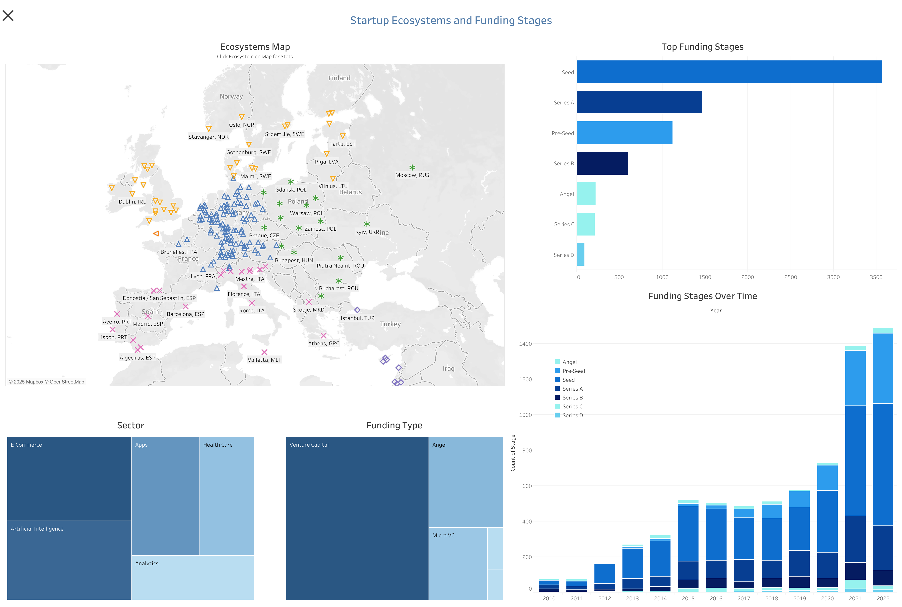
Tableau: Electricity Market Dashboard
Interactive dashboard of Europe’s electricity generation, sources, and cross-border flows in 2024.
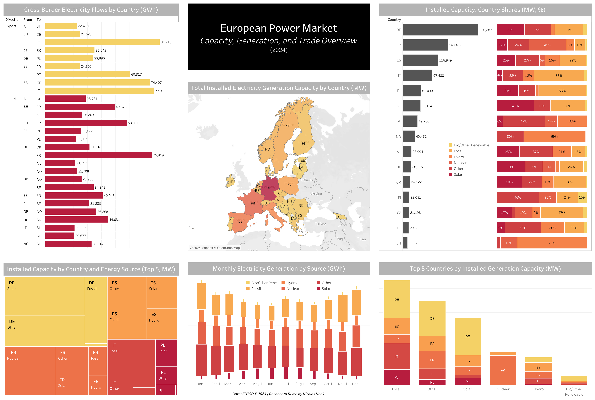
Shiny: Trend Explorer
Semantic analytics and topic trend detection across global news articles (2010–2025).
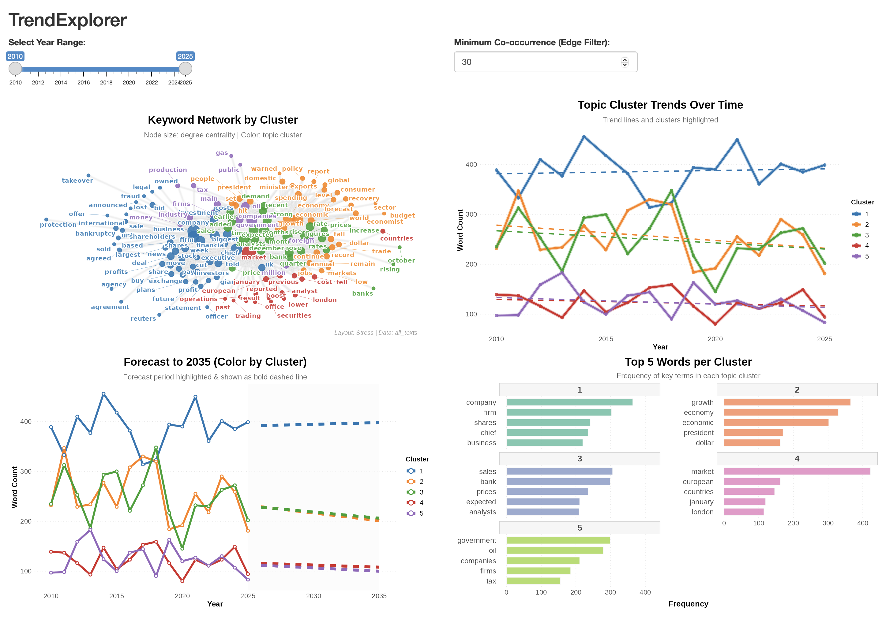
Power BI: Investment Banking KPI Dashboards
These dashboards present key P&L, risk, and client metrics for an investment banking portfolio.
They demonstrate professional KPI reporting, business breakdowns, and risk heatmaps.
All data is simulated for demonstration purposes.
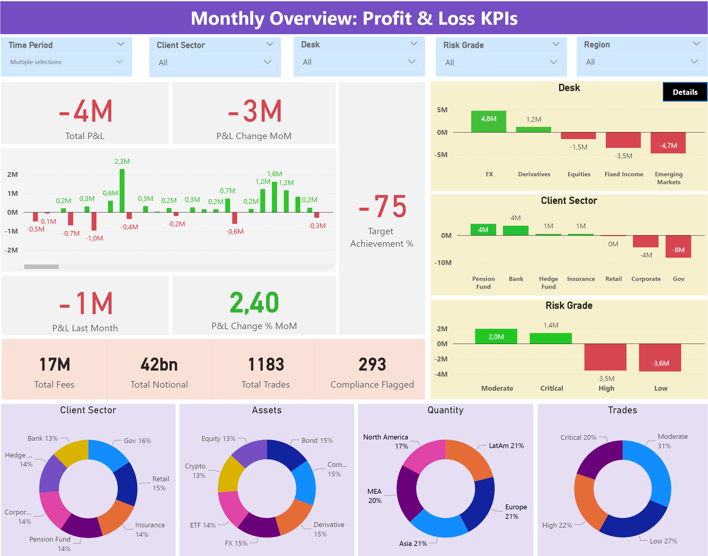
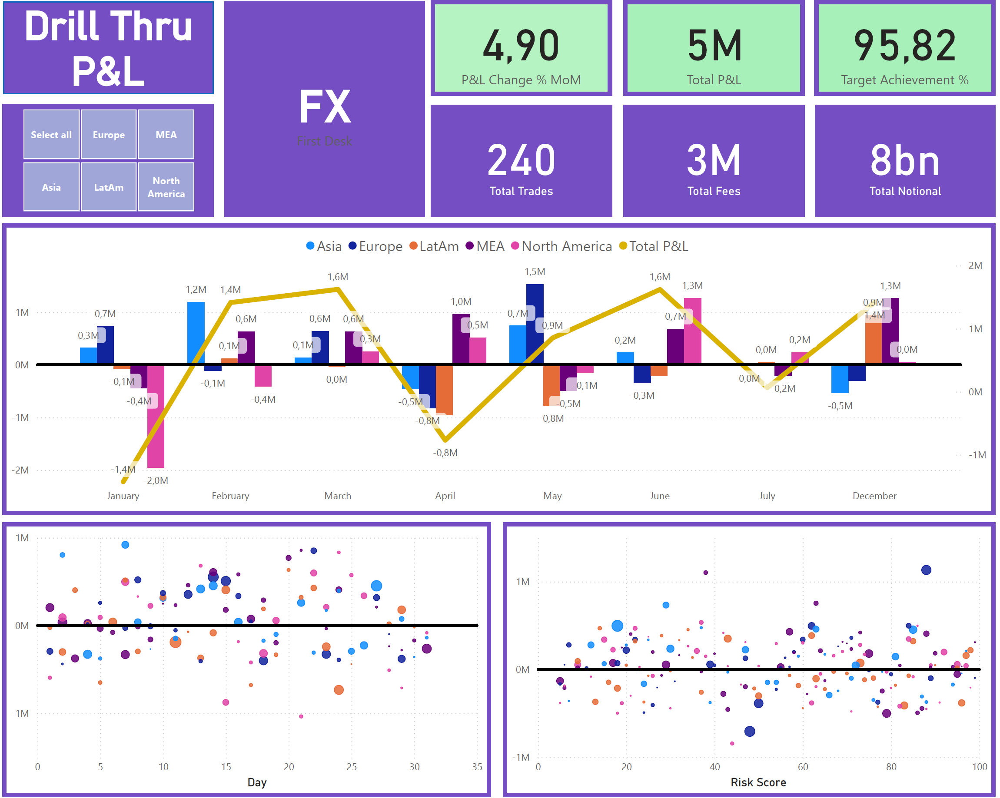
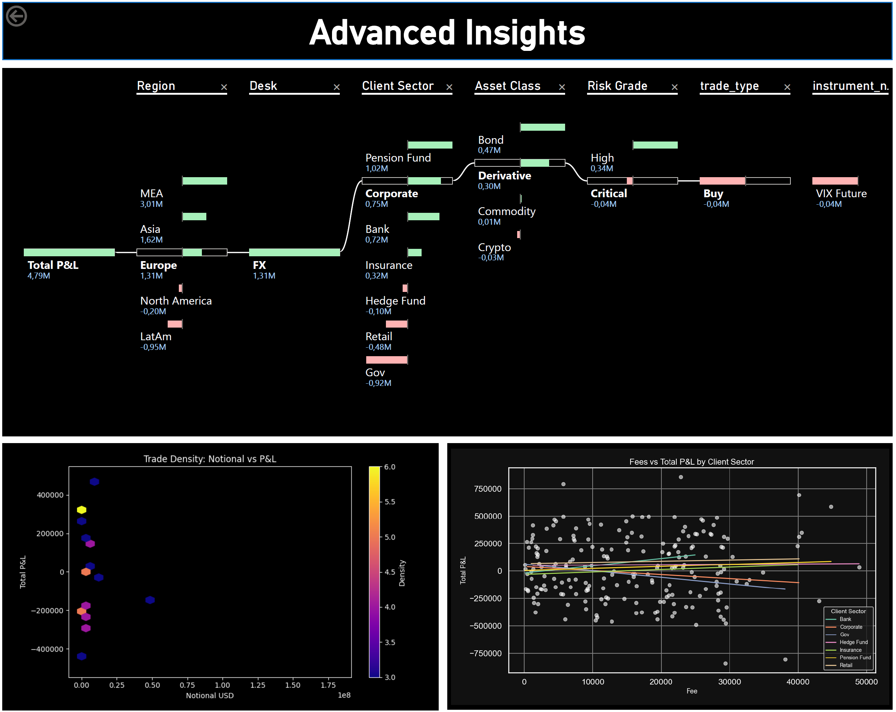
Streamlit: AI Investment Q&A App
This AI-powered Streamlit app allows you to interactively ask questions about global investment data curated from Crunchbase. Built with OpenAI's GPT models, it demonstrates real-time data-driven decision support based on a dataset of 630,000 startup investments across ecosystems worldwide.
Lecturing and Workshops
Some impressions of my work as consultant, lecturer and startup coach – teaching business and financial planning, sustainable business modelling, pitch readiness and startup strategy.
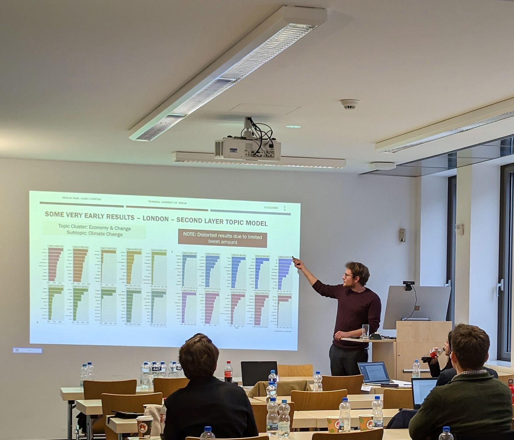
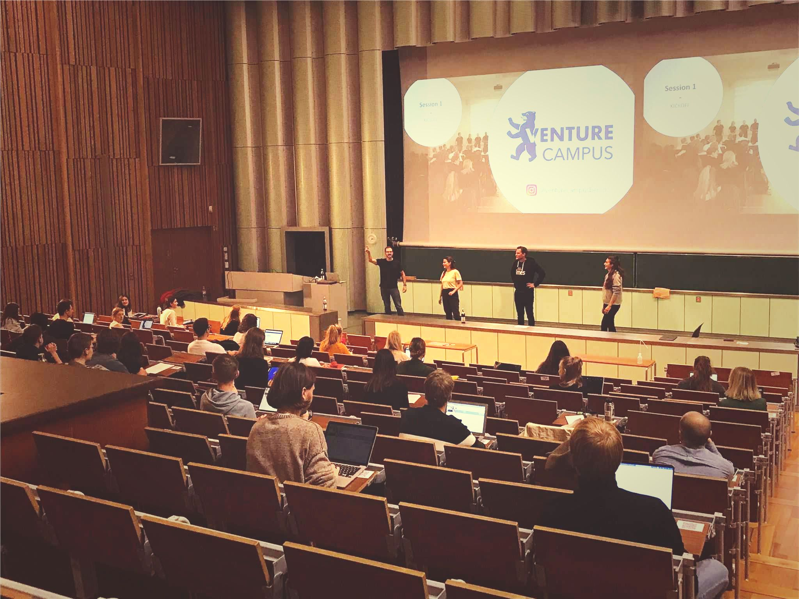
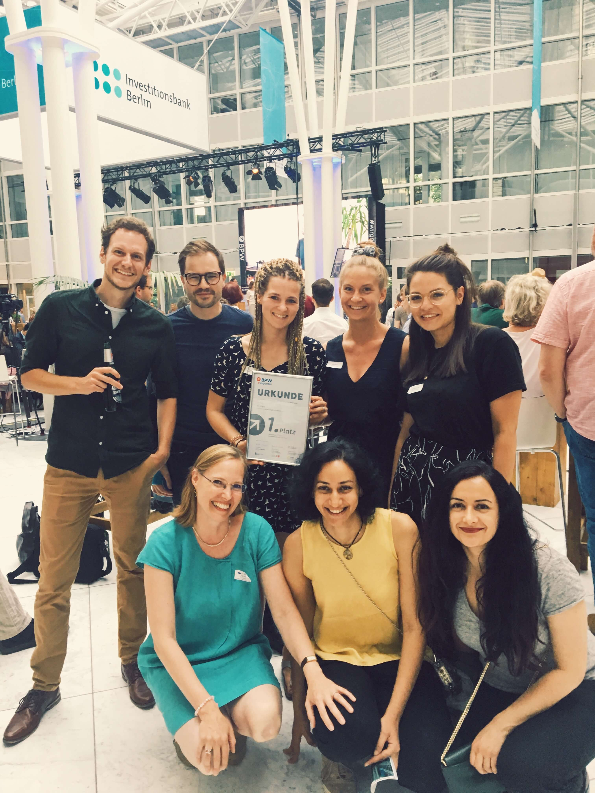
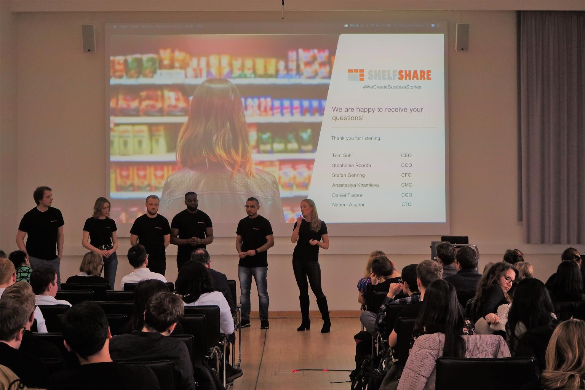
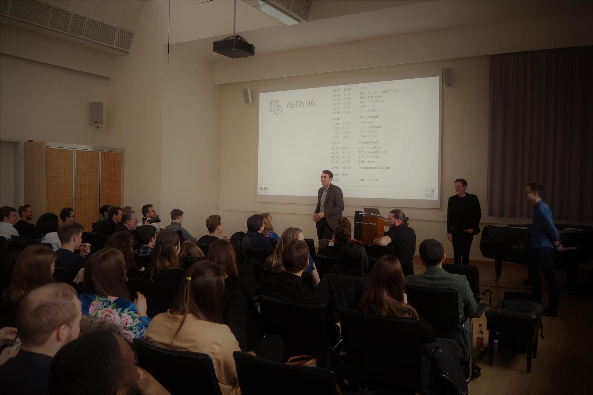
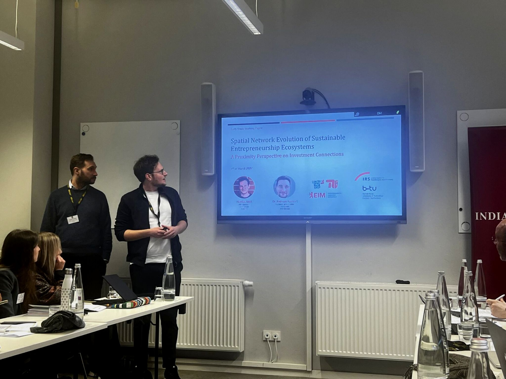
Doctoral Dissertation
Summary Slides
This presentation summarizes my doctoral research on entrepreneurial ecosystems and investment network dynamics (TU Berlin, 2025).
Publications
Journal Article: Small Business Economics (2025): DOI:10.1007/s11187-025-01029-y